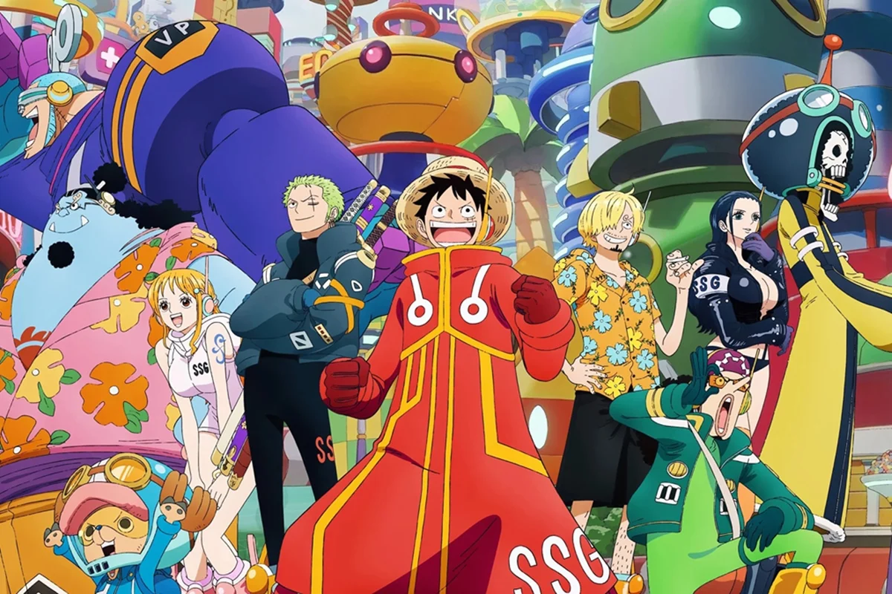
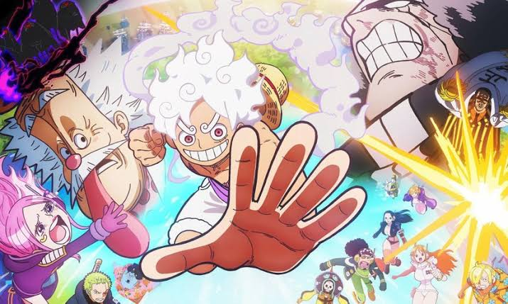

One Piece é uma famosa série de mangá e anime criada por Eiichiro Oda. A história acompanha as aventuras de Monkey D. Luffy, um jovem que ganha o corpo de borracha após comer uma Fruta do Diabo (Akuma no Mi), e sua tripulação, os Piratas do Chapéu de Palha, enquanto viajam pelos mares em busca do lendário tesouro One Piece para Luffy se tornar o Rei dos Piratas.

